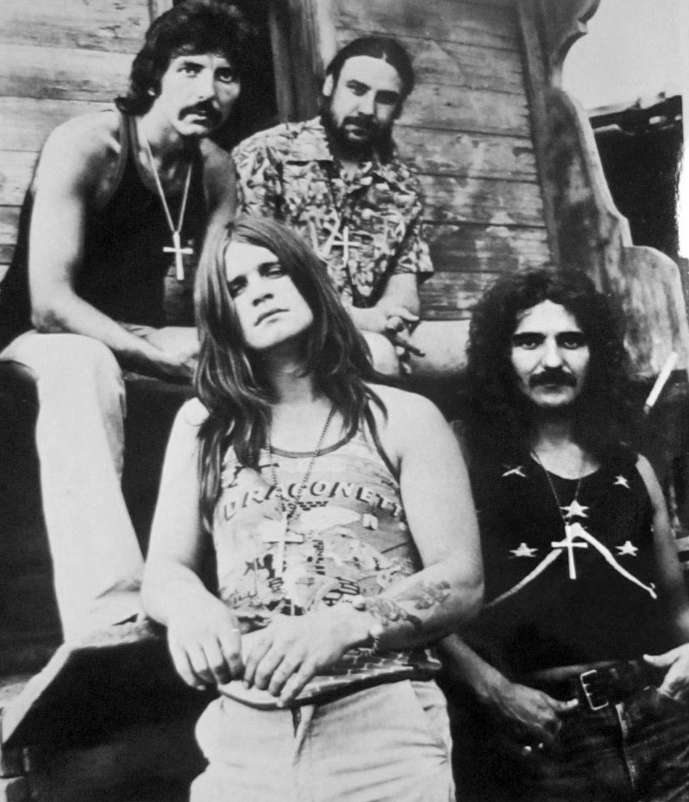

BLACK SABBATH
Što je Black Sabbath?
- Engleska rock grupa osnovana u Birminghamu 1968. pod nazivom Earth
- Smatra ih se pionirima heavy metala
- Primljeni su u Rock and Roll Hall of Fame 2006. godine
Originalni članovi grupe Black Sabbath bili su:
- Ozzy Osbourne - vokal
- Tony Iommi - gitara
- Geezer Butler - bas gitara
- Bill Ward - bubnjevi

Black Sabbath ima mnogo poznatih pjesama, ali jedna od najpoznatijih je definitivno "Paranoid". Ova pjesma je izdana kao singl 1970. godine i postala je simbolom i himnom heavy metala.
Poslušaj pjesmu